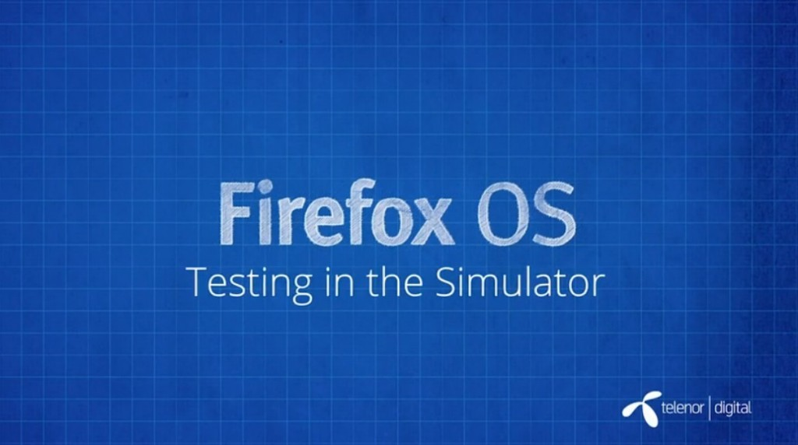

你是熱血的開發者，而且早就想開發自己的 Firefox OS App 嗎？在完成
之後，就該測試自己的 App 作品在 Firefox OS 中的作業情形了。其實 Firefox 桌面版就已經提供「應用程式管理員 (App Manager)」這個強大的工具 (中文字幕)。快來觀賞影片並透過 Firefox OS 模擬環境測試 App 吧！

應用程式管理員 (App Manager)
要想開始入門 Firefox OS，最簡單的方法就是使用「應用程式管理員 (App Manager)」。應用程式管理員也是桌面版 Firefox 的開發者工具之一，可在電腦上模擬 Firefox OS 裝置。開發者可盡情把玩 Firefox OS，也可像在實際裝置上安裝並測試 App。此外，你也能離線或上線編輯 App，進而體驗 App 並進行除錯，在模擬裝置中即時看到修改之後的結果。
若要進一步了解應用程式管理員：
看完影片，你是否對 Firefox OS App 有更深入的了解呢？請別錯過即將陸續發佈且完成中文化的系列影片。
你也可以直接觀賞 MDN 上的原文系列影片《Screencast series: App Basics for Firefox OS》。
亦可欣賞中文版的《系列影片：Firefox OS App 開發入門》。我們將逐一完成影片的中文化，並隨時更新各影片所對應的文章內容。